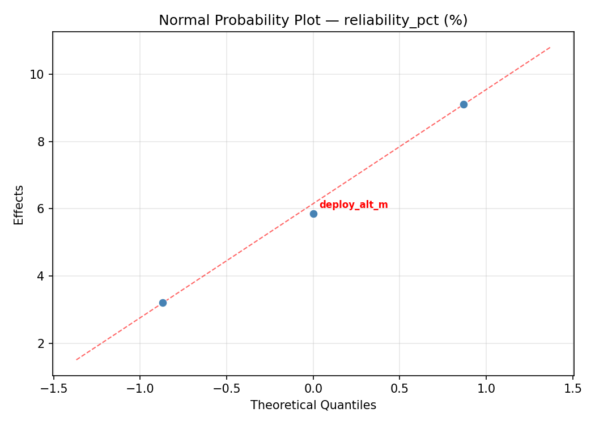
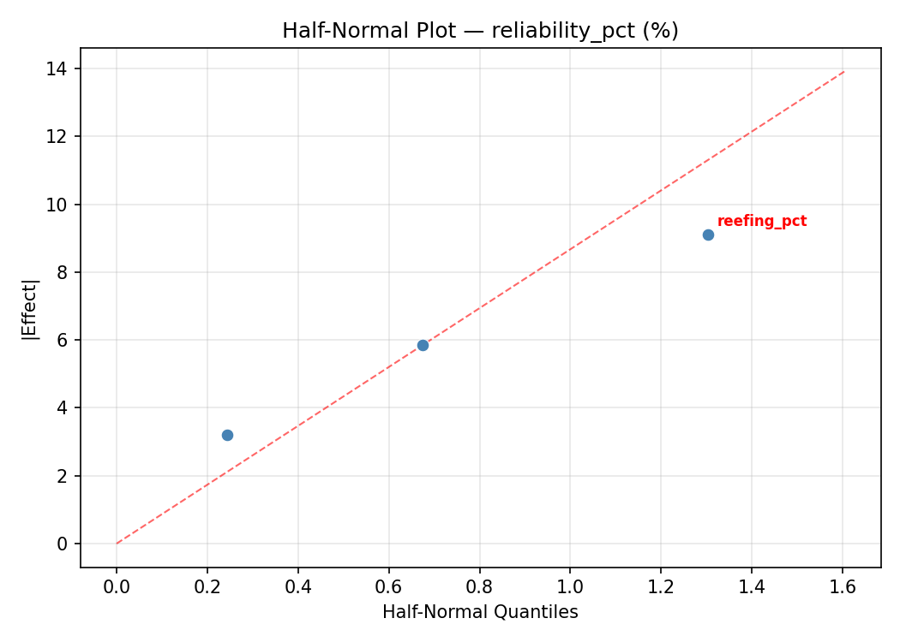
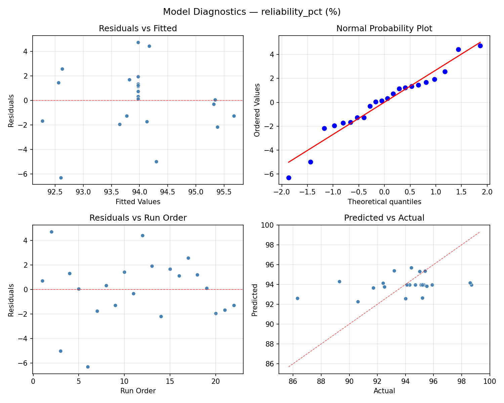
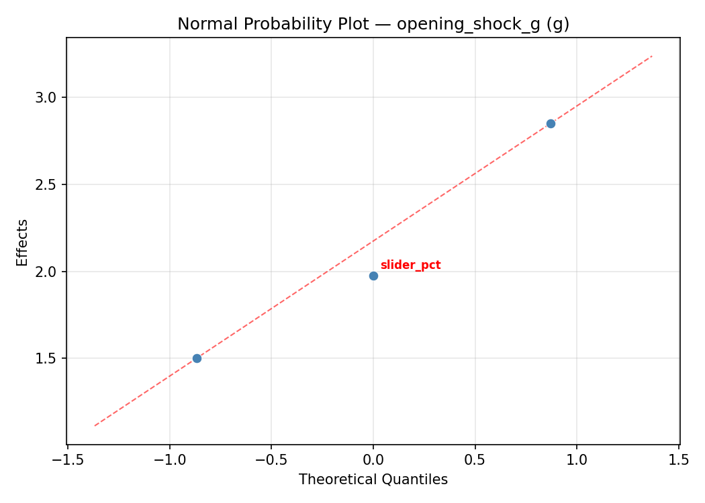
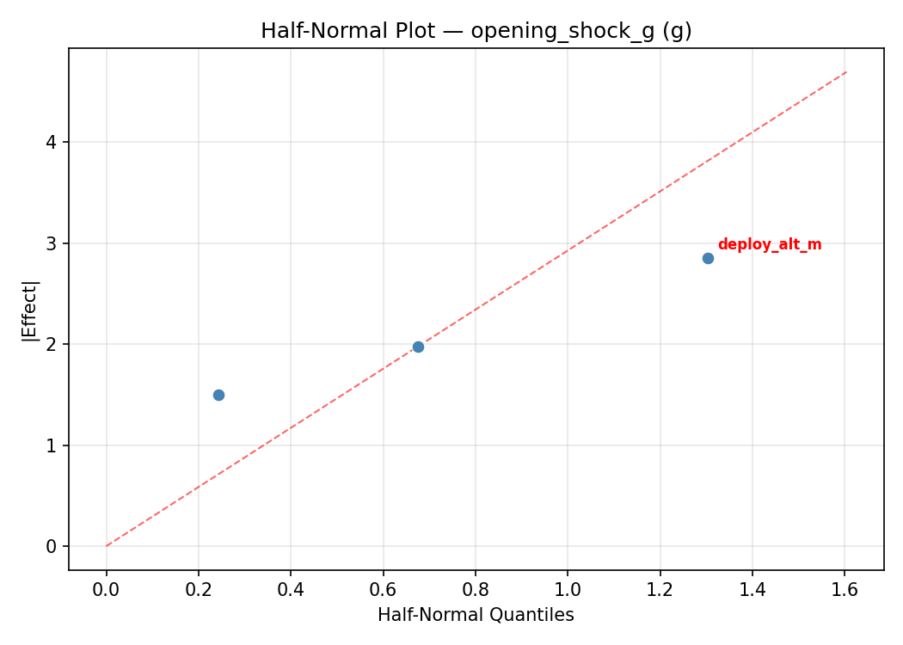
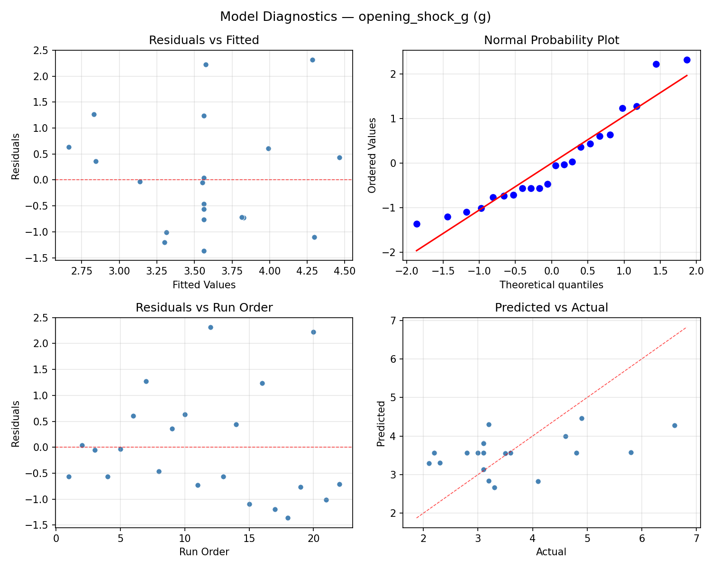

Summary
This experiment investigates parachute deployment dynamics. Central composite design to maximize opening reliability and minimize opening shock by tuning deployment altitude, reefing ratio, and slider size.
The design varies 3 factors: deploy alt m (m), ranging from 300 to 1500, reefing pct (%), ranging from 0 to 50, and slider pct (%), ranging from 60 to 100. The goal is to optimize 2 responses: reliability pct (%) (maximize) and opening shock g (g) (minimize). Fixed conditions held constant across all runs include canopy = ram_air, load = 90kg.
A Central Composite Design (CCD) was selected to fit a full quadratic response surface model, including curvature and interaction effects. With 3 factors this produces 22 runs including center points and axial (star) points that extend beyond the factorial range.
Quadratic response surface models were fitted to capture potential curvature and factor interactions. The RSM contour plots below visualize how pairs of factors jointly affect each response.
Key Findings
For reliability pct, the most influential factors were deploy alt m (45.9%), reefing pct (31.0%), slider pct (23.1%). The best observed value was 98.7 (at deploy alt m = 1995.45, reefing pct = 25, slider pct = 80).
For opening shock g, the most influential factors were slider pct (48.9%), deploy alt m (26.1%), reefing pct (25.0%). The best observed value was 2.1 (at deploy alt m = 1500, reefing pct = 0, slider pct = 60).
Recommended Next Steps
- Run confirmation experiments at the predicted optimal settings to validate the model.
- Consider whether any fixed factors should be varied in a future study.
Experimental Setup
Factors
| Factor | Low | High | Unit |
|---|
deploy_alt_m | 300 | 1500 | m |
reefing_pct | 0 | 50 | % |
slider_pct | 60 | 100 | % |
Fixed: canopy = ram_air, load = 90kg
Responses
| Response | Direction | Unit |
|---|
reliability_pct | ↑ maximize | % |
opening_shock_g | ↓ minimize | g |
Configuration
{
"metadata": {
"name": "Parachute Deployment Dynamics",
"description": "Central composite design to maximize opening reliability and minimize opening shock by tuning deployment altitude, reefing ratio, and slider size"
},
"factors": [
{
"name": "deploy_alt_m",
"levels": [
"300",
"1500"
],
"type": "continuous",
"unit": "m"
},
{
"name": "reefing_pct",
"levels": [
"0",
"50"
],
"type": "continuous",
"unit": "%"
},
{
"name": "slider_pct",
"levels": [
"60",
"100"
],
"type": "continuous",
"unit": "%"
}
],
"fixed_factors": {
"canopy": "ram_air",
"load": "90kg"
},
"responses": [
{
"name": "reliability_pct",
"optimize": "maximize",
"unit": "%"
},
{
"name": "opening_shock_g",
"optimize": "minimize",
"unit": "g"
}
],
"settings": {
"operation": "central_composite",
"test_script": "use_cases/269_parachute_deployment/sim.sh"
}
}
Experimental Matrix
The Central Composite Design produces 22 runs. Each row is one experiment with specific factor settings.
| Run | deploy_alt_m | reefing_pct | slider_pct |
|---|
| 1 | 900 | 25 | 80 |
| 2 | 1500 | 0 | 100 |
| 3 | 300 | 50 | 60 |
| 4 | 900 | 70.6435 | 80 |
| 5 | 900 | 25 | 80 |
| 6 | -195.445 | 25 | 80 |
| 7 | 900 | 25 | 43.4852 |
| 8 | 900 | 25 | 80 |
| 9 | 1500 | 50 | 60 |
| 10 | 1995.45 | 25 | 80 |
| 11 | 900 | 25 | 80 |
| 12 | 900 | -20.6435 | 80 |
| 13 | 900 | 25 | 80 |
| 14 | 300 | 0 | 100 |
| 15 | 900 | 25 | 80 |
| 16 | 1500 | 0 | 60 |
| 17 | 900 | 25 | 116.515 |
| 18 | 1500 | 50 | 100 |
| 19 | 900 | 25 | 80 |
| 20 | 300 | 0 | 60 |
| 21 | 300 | 50 | 100 |
| 22 | 900 | 25 | 80 |
Step-by-Step Workflow
1
Preview the design
$ python doe.py info --config use_cases/269_parachute_deployment/config.json
2
Generate the runner script
$ python doe.py generate --config use_cases/269_parachute_deployment/config.json \
--output use_cases/269_parachute_deployment/results/run.sh --seed 42
3
Execute the experiments
$ bash use_cases/269_parachute_deployment/results/run.sh
4
Analyze results
$ python doe.py analyze --config use_cases/269_parachute_deployment/config.json
5
Get optimization recommendations
$ python doe.py optimize --config use_cases/269_parachute_deployment/config.json
6
Multi-objective optimization
With 2 competing responses, use --multi to find the best compromise via Derringer–Suich desirability.
$ python doe.py optimize --config use_cases/269_parachute_deployment/config.json --multi
7
Generate the HTML report
$ python doe.py report --config use_cases/269_parachute_deployment/config.json \
--output use_cases/269_parachute_deployment/results/report.html
Features Exercised
| Feature | Value |
|---|
| Design type | central_composite |
| Factor types | continuous (all 3) |
| Arg style | double-dash |
| Responses | 2 (reliability_pct ↑, opening_shock_g ↓) |
| Total runs | 22 |
Analysis Results
Generated from actual experiment runs using the DOE Helper Tool.
Response: reliability_pct
Top factors: deploy_alt_m (45.9%), reefing_pct (31.0%), slider_pct (23.1%).
ANOVA
| Source | DF | SS | MS | F | p-value |
|---|
| Source | DF | SS | MS | F | p-value |
| deploy_alt_m | 4 | 66.7136 | 16.6784 | 3.723 | 0.0470 |
| reefing_pct | 4 | 20.3595 | 5.0899 | 1.136 | 0.3988 |
| slider_pct | 4 | 12.9436 | 3.2359 | 0.722 | 0.5981 |
| Lack | of | Fit | 2 | 30.8869 | 15.4434 |
| Pure | Error | 7 | 31.3600 | | |
| Error | 9 | 62.2469 | 4.4800 | | |
| Total | 21 | 162.2636 | 7.7268 | | |
Pareto Chart

Main Effects Plot

Normal Probability Plot of Effects

Half-Normal Plot of Effects

Model Diagnostics

Response: opening_shock_g
Top factors: slider_pct (48.9%), deploy_alt_m (26.1%), reefing_pct (25.0%).
ANOVA
| Source | DF | SS | MS | F | p-value |
|---|
| Source | DF | SS | MS | F | p-value |
| deploy_alt_m | 4 | 1.4242 | 0.3561 | 0.169 | 0.9487 |
| reefing_pct | 4 | 3.2417 | 0.8104 | 0.385 | 0.8143 |
| slider_pct | 4 | 6.6684 | 1.6671 | 0.792 | 0.5590 |
| Lack | of | Fit | 2 | 1.1615 | 0.5808 |
| Pure | Error | 7 | 14.7350 | | |
| Error | 9 | 15.8965 | 2.1050 | | |
| Total | 21 | 27.2309 | 1.2967 | | |
Pareto Chart

Main Effects Plot

Normal Probability Plot of Effects

Half-Normal Plot of Effects

Model Diagnostics

Response Surface Plots
3D surfaces fitted with quadratic RSM. Red dots are observed data points.
opening shock g deploy alt m vs reefing pct

opening shock g deploy alt m vs slider pct

opening shock g reefing pct vs slider pct

reliability pct deploy alt m vs reefing pct

reliability pct deploy alt m vs slider pct

reliability pct reefing pct vs slider pct

Multi-Objective Optimization
When responses compete, Derringer–Suich desirability finds the best compromise.
Each response is scaled to a 0–1 desirability, then combined via a weighted geometric mean.
Overall Desirability
D = 0.8307
Per-Response Desirability
| Response | Weight | Desirability | Predicted | Dir |
|---|
reliability_pct |
1.5 |
|
97.53 0.8685 97.53 % |
↑ |
opening_shock_g |
1.0 |
|
2.98 0.7771 2.98 g |
↓ |
Recommended Settings
| Factor | Value |
|---|
deploy_alt_m | 1500 m |
reefing_pct | 0 % |
slider_pct | 100 % |
Source: from RSM model prediction
Trade-off Summary
Sacrifice = how much worse than single-objective best.
| Response | Predicted | Best Observed | Sacrifice |
|---|
opening_shock_g | 2.98 | 2.10 | +0.88 |
Top 3 Runs by Desirability
| Run | D | Factor Settings |
|---|
| #17 | 0.7911 | deploy_alt_m=900, reefing_pct=70.6435, slider_pct=80 |
| #18 | 0.7843 | deploy_alt_m=-195.445, reefing_pct=25, slider_pct=80 |
Model Quality
| Response | R² | Type |
|---|
opening_shock_g | 0.5424 | quadratic |
Full Multi-Objective Output
============================================================
MULTI-OBJECTIVE OPTIMIZATION
Method: Derringer-Suich Desirability Function
============================================================
Overall desirability: D = 0.8307
Response Weight Desirability Predicted Direction
---------------------------------------------------------------------
reliability_pct 1.5 0.8685 97.53 % ↑
opening_shock_g 1.0 0.7771 2.98 g ↓
Recommended settings:
deploy_alt_m = 1500 m
reefing_pct = 0 %
slider_pct = 100 %
(from RSM model prediction)
Trade-off summary:
reliability_pct: 97.53 (best observed: 98.70, sacrifice: +1.17)
opening_shock_g: 2.98 (best observed: 2.10, sacrifice: +0.88)
Model quality:
reliability_pct: R² = 0.3567 (quadratic)
opening_shock_g: R² = 0.5424 (quadratic)
Top 3 observed runs by overall desirability:
1. Run #2 (D=0.8193): deploy_alt_m=1500, reefing_pct=0, slider_pct=100
2. Run #17 (D=0.7911): deploy_alt_m=900, reefing_pct=70.6435, slider_pct=80
3. Run #18 (D=0.7843): deploy_alt_m=-195.445, reefing_pct=25, slider_pct=80
Full Analysis Output
=== Main Effects: reliability_pct ===
Factor Effect Std Error % Contribution
--------------------------------------------------------------
deploy_alt_m 5.0750 0.5926 45.9%
reefing_pct 3.4250 0.5926 31.0%
slider_pct 2.5500 0.5926 23.1%
=== ANOVA Table: reliability_pct ===
Source DF SS MS F p-value
-----------------------------------------------------------------------------
deploy_alt_m 4 66.7136 16.6784 3.723 0.0470
reefing_pct 4 20.3595 5.0899 1.136 0.3988
slider_pct 4 12.9436 3.2359 0.722 0.5981
Lack of Fit 2 30.8869 15.4434 3.447 0.0908
Pure Error 7 31.3600 4.4800
Error 9 62.2469 4.4800
Total 21 162.2636 7.7268
=== Summary Statistics: reliability_pct ===
deploy_alt_m:
Level N Mean Std Min Max
------------------------------------------------------------
-195.445 1 92.4000 0.0000 92.4000 92.4000
1500 4 95.6000 2.1087 94.0000 98.7000
1995.45 1 94.4000 0.0000 94.4000 94.4000
300 4 90.5250 4.0103 86.3000 95.9000
900 12 94.6750 1.7571 91.7000 98.6000
reefing_pct:
Level N Mean Std Min Max
------------------------------------------------------------
-20.6435 1 95.5000 0.0000 95.5000 95.5000
0 4 92.0750 5.4359 86.3000 98.7000
25 12 94.3333 1.8242 91.7000 98.6000
50 4 94.0500 2.3558 90.6000 95.9000
70.6435 1 95.4000 0.0000 95.4000 95.4000
slider_pct:
Level N Mean Std Min Max
------------------------------------------------------------
100 4 92.6500 5.3743 86.3000 98.7000
116.515 1 95.2000 0.0000 95.2000 95.2000
43.4852 1 95.2000 0.0000 95.2000 95.2000
60 4 93.4750 2.8918 89.3000 95.9000
80 12 94.3750 1.8484 91.7000 98.6000
=== Main Effects: opening_shock_g ===
Factor Effect Std Error % Contribution
--------------------------------------------------------------
slider_pct 1.8750 0.2428 48.9%
deploy_alt_m 1.0000 0.2428 26.1%
reefing_pct 0.9583 0.2428 25.0%
=== ANOVA Table: opening_shock_g ===
Source DF SS MS F p-value
-----------------------------------------------------------------------------
deploy_alt_m 4 1.4242 0.3561 0.169 0.9487
reefing_pct 4 3.2417 0.8104 0.385 0.8143
slider_pct 4 6.6684 1.6671 0.792 0.5590
Lack of Fit 2 1.1615 0.5808 0.276 0.7668
Pure Error 7 14.7350 2.1050
Error 9 15.8965 2.1050
Total 21 27.2309 1.2967
=== Summary Statistics: opening_shock_g ===
deploy_alt_m:
Level N Mean Std Min Max
------------------------------------------------------------
-195.445 1 4.1000 0.0000 4.1000 4.1000
1500 4 3.2500 0.2646 3.0000 3.6000
1995.45 1 3.1000 0.0000 3.1000 3.1000
300 4 3.3500 0.9678 2.3000 4.6000
900 12 3.7333 1.4393 2.1000 6.6000
reefing_pct:
Level N Mean Std Min Max
------------------------------------------------------------
-20.6435 1 3.2000 0.0000 3.2000 3.2000
0 4 3.7500 0.5802 3.3000 4.6000
25 12 3.8083 1.4324 2.1000 6.6000
50 4 2.8500 0.3697 2.3000 3.1000
70.6435 1 3.1000 0.0000 3.1000 3.1000
slider_pct:
Level N Mean Std Min Max
------------------------------------------------------------
100 4 3.4000 0.9626 2.3000 4.6000
116.515 1 2.2000 0.0000 2.2000 2.2000
43.4852 1 2.1000 0.0000 2.1000 2.1000
60 4 3.2000 0.2449 3.0000 3.5000
80 12 3.9750 1.2650 2.8000 6.6000
Optimization Recommendations
=== Optimization: reliability_pct ===
Direction: maximize
Best observed run: #2
deploy_alt_m = 1995.45
reefing_pct = 25
slider_pct = 80
Value: 98.7
RSM Model (linear, R² = 0.0060, Adj R² = -0.1597):
Coefficients:
intercept +93.9727
deploy_alt_m +0.2006
reefing_pct +0.1603
slider_pct -0.0015
RSM Model (quadratic, R² = 0.4376, Adj R² = 0.0158):
Coefficients:
intercept +92.2556
deploy_alt_m +0.2006
reefing_pct +0.1603
slider_pct -0.0015
deploy_alt_m*reefing_pct -0.4625
deploy_alt_m*slider_pct -0.0375
reefing_pct*slider_pct -0.3125
deploy_alt_m^2 +1.4285
reefing_pct^2 +1.2336
slider_pct^2 -0.0864
Curvature analysis:
deploy_alt_m coef=+1.4285 convex (has a minimum)
reefing_pct coef=+1.2336 convex (has a minimum)
slider_pct coef=-0.0864 negligible curvature
Notable interactions:
deploy_alt_m*reefing_pct coef=-0.4625 (antagonistic)
reefing_pct*slider_pct coef=-0.3125 (antagonistic)
Predicted optimum (from quadratic model, at observed points):
deploy_alt_m = 1995.45
reefing_pct = 25
slider_pct = 80
Predicted value: 97.3838
Surface optimum (via L-BFGS-B, quadratic model):
deploy_alt_m = 1500
reefing_pct = 0
slider_pct = 100
Predicted value: 95.6076
Model quality: Weak fit — consider adding center points or using a different design.
Factor importance:
1. deploy_alt_m (effect: 5.8, contribution: 39.6%)
2. reefing_pct (effect: 5.6, contribution: 38.2%)
3. slider_pct (effect: 3.2, contribution: 22.1%)
=== Optimization: opening_shock_g ===
Direction: minimize
Best observed run: #17
deploy_alt_m = 1500
reefing_pct = 0
slider_pct = 60
Value: 2.1
RSM Model (linear, R² = 0.2759, Adj R² = 0.1552):
Coefficients:
intercept +3.5636
deploy_alt_m -0.1070
reefing_pct +0.6471
slider_pct -0.2866
RSM Model (quadratic, R² = 0.4968, Adj R² = 0.1193):
Coefficients:
intercept +3.2597
deploy_alt_m -0.1070
reefing_pct +0.6471
slider_pct -0.2866
deploy_alt_m*reefing_pct -0.0375
deploy_alt_m*slider_pct +0.3375
reefing_pct*slider_pct -0.3375
deploy_alt_m^2 -0.1480
reefing_pct^2 +0.2870
slider_pct^2 +0.3170
Curvature analysis:
slider_pct coef=+0.3170 convex (has a minimum)
reefing_pct coef=+0.2870 convex (has a minimum)
deploy_alt_m coef=-0.1480 concave (has a maximum)
Notable interactions:
deploy_alt_m*slider_pct coef=+0.3375 (synergistic)
reefing_pct*slider_pct coef=-0.3375 (antagonistic)
Predicted optimum (from linear model, at observed points):
deploy_alt_m = 900
reefing_pct = 70.6435
slider_pct = 80
Predicted value: 4.7450
Surface optimum (via L-BFGS-B, linear model):
deploy_alt_m = 1500
reefing_pct = 0
slider_pct = 100
Predicted value: 2.5229
Model quality: Weak fit — consider adding center points or using a different design.
Factor importance:
1. reefing_pct (effect: 3.8, contribution: 50.7%)
2. slider_pct (effect: 2.8, contribution: 36.7%)
3. deploy_alt_m (effect: 0.9, contribution: 12.6%)